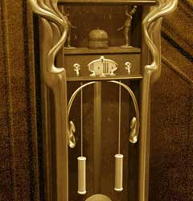
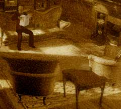

| 概要 | 地図 |
| 淡いヒント集 | ヒント集 | 的確なヒント集 |
| 攻略最短ルート |
| 場所選択に戻る |
夢の世界
洞窟の奥へ移動し、「マンモスの人形」を入手 アンナに話しかける (選択肢を選ぶ必要はない) 工場へ移動し、5つに分かれる場所を右へ移動 家の中へ入る  時計を調べる 文字盤の左右に付いているスイッチを操作する (右を4回、左を2回の順) 文字盤の上にある2体の人形をクリック (画像のようにおもりが上がる) 下に付いている、丸い分銅をクリック (分銅が揺れる) 右のおもりをクリックする (上の時計の針が右回りに動き出す) 文字盤のスイッチを操作し、「7時15分」にセットする 人形に挟まれているベルをクリック (おじさんが出かけていく)  部屋の机を調べ、「屋根裏部屋の鍵」を入手 階段を上がり、扉に対して「屋根裏部屋の鍵」を使う  少年に対し「マンモスの人形」を使う (少年が消える) 机をクリック |
| 場所選択に戻る |
| 概要 | 地図 |
| 淡いヒント集 | ヒント集 | 的確なヒント集 |
| 攻略最短ルート |
Syberia II
| 目次へ戻る | ページの上部へ |